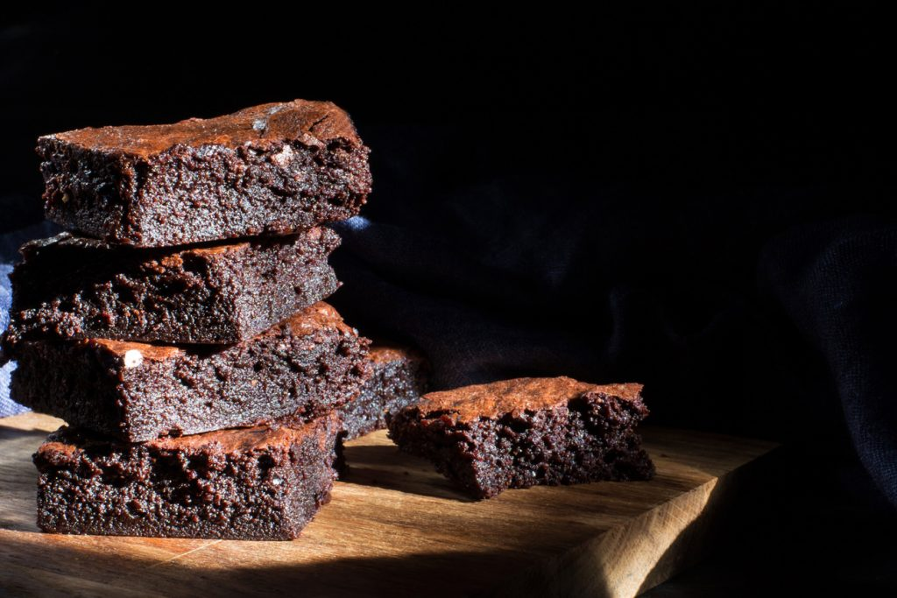

Mexican Brownies Recipe

How To Make Mexican Brownies
What makes these Mexican brownies different, you ask? It's the unique hit of cayenne and cinnamon in every fudgy bite.
Ingredients
- cooking spray, nonstick, or oil, for greasing pan
- 1⁄2 cup all-purpose flour
- 1⁄3 cup unsweetened cocoa powder
- 1⁄2 tsp salt
- 1⁄2 tsp ground cinnamon
- 1⁄4 tsp cayenne pepper
- 1⁄2 cup unsalted butter
- 1 cup semisweet chocolate chips
- 1 cup granulated sugar
- 1⁄4 cup dark brown sugar
- 1 tsp vanilla extract
- 2 large egg
- 1 large egg yolk
Steps
- Heat oven to 350 degrees F. Spray the inside of an 8-inch square baking pan with nonstick spray or oil. Line the pan with parchment paper, and then spray the parchment with nonstick spray or oil as well.
- Add flour, cocoa powder, salt, cinnamon, and cayenne pepper to a large bowl. Whisk to combine.
- In a small saucepan over medium-low heat, add butter and chocolate chips. Stir continuously until the mixture has completely melted.
- Remove from heat. Add the granulated sugar, brown sugar, and vanilla extract. Stir until well combined.
- Add the eggs and egg yolk. Stir until well combined.
- Pour the wet ingredients into the flour mixture. Fold together with a rubber spatula or wooden spoon until just combined. Try not to overmix.
- Pour the batter in the prepared baking pan and bake for 32 to 36 minutes, until the center is firm and a toothpick inserted into the center comes out mostly clean.
- Let the brownies cool completely in the pan, then transfer to a cutting board slice into squares.